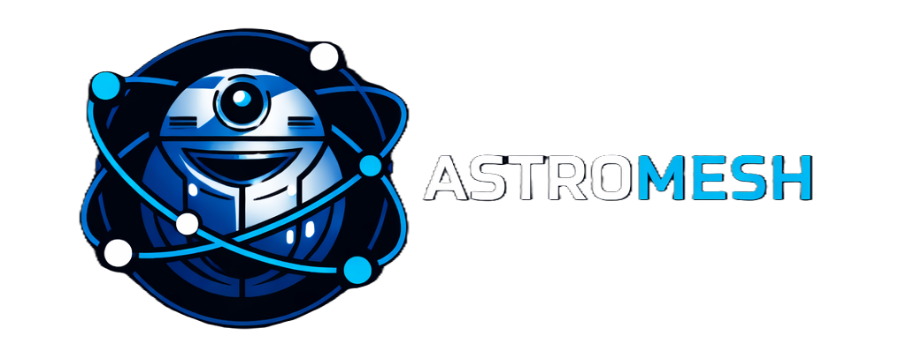
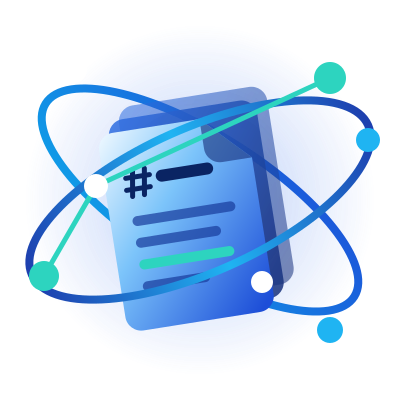

OPEN SOURCE · PyPI
Libero astromesh-okf: tus agentes navegan el conocimiento como una persona, en vez de recuperar fragmentos sueltos.
Tampoco quién lo revisó, ni a qué otro documento apunta. Una persona no lee así: abre el índice, sigue los links y mira la fecha.
Índice → búsqueda → concepto → link. Y cuando llega a la política vieja, la lee con la advertencia puesta.
trust, stale, status y warnings. El modelo decide sabiendo.kb_find saltea lo deprecado, porque un resultado de búsqueda es una recomendación, y una política retirada no debería serlo.policies/refunds, no de "un fragmento por ahí".limit="2" y tags="finance" en vez de una lista. El loop no se cae.prefix.El lector OKF del runtime, extraído como librería. El core de Astromesh ya lo usa como dependencia.
Y cualquier cliente MCP, con pip install astromesh-okf. Probado en cada CI contra los 4 bundles de ejemplo de Google: 53 conceptos, ninguno descartado.